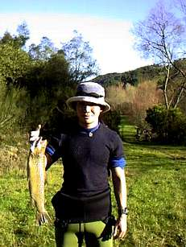

釣行日誌 ＮＺ編
Ｒ君、会心の笑顔
2001/06/02 (SAT)
ロッドの修理が終わり、釣りに行きたくてウズウズしていたＲ君と、山岳渓流に向かう。冬になって霧の多くなってきたハミルトン周辺は、朝９時過ぎになってもミルク瓶の底をドライブしているようである。こいつは川についても対岸が見えないんじゃないか？などと懸念しつつハイウェイを南下する。
９時半にどんづまりの橋に着く。橋の上から眺める今日のこの川は、カフェオレと抹茶を混ぜたような濁り具合。水量も多い。潔くフライをあきらめ（笑）、安易とは知りつつもルアーロッドをセットする。
例によってＲ君は橋詰めの右岸より出てくる沢に入って行きたいそうなので、私は下流まで車で送ってもらって三本橋からスタート。
No.3吊り橋の下流のカーブでは、良いポイントにもかかわらずまったく魚影なし。ただ、流れ込みで小学校低学年サイズの鱒がかかるが、スポッと外れた。橋の直下の早瀬の終わりで、斜めに引いてきた銀色のスプーンに、ピンク色に輝く光の帯が覆い被さるのが見えた。
『むっ！ レインボー！』
とほくそ笑んだが、かの煌めきは衝撃に変わることなくどこかへ消えた。高校２年生ぐらいのサイズであった。この吊り橋の上流は、通らずの崖になっているので、そこまで行ってから、増水の渓谷を吊り下ることにする。冬場になり、鱒の活性が低いので、ルアーを速いスピードで引くと追いきれないのである。特にブラウンは動きが鈍い上にしっかりルアーを見切るので、目の前に泳がせてやらないと喰いつかない。
沢の落ち口、対岸の淵尻、どこも沈黙が続く。正月にＮ君が大物を釣った大石のポイントに来た。石の向こう側にスプーンを投入し、石の背後の乱流の中を深めに通しつつ引いてくると、石とこちら岸の間の速い流れの中から黒い背中が現れた。ぐねりぐねりと身をよじらせてスプーンを追跡してくる魚体が、閃く金属片のすぐ後ろの水面を波立たせる。
『喰えっ！』
との念力波も効力無く、黒い影は姿を消した。
『やっぱりここに大物ブラウンが居たか......』
もし今の鱒が、５ヶ月前にＮ君が釣ったブラウントラウトであるとすれば、62cmだったそれは、夏と秋を経て、さらに大きく育っているに違いない。
さて。
ルアー、あるいはフライの鱒釣りで難しいのは、第一投を追ってきながら喰わずに流れに消えた鱒に対する第二投目を、どのタイミングで、どこへ投げるか？ だと思う。鱒が最初に定位していた位置から離れ、大きく下流へ移動してしまった場合、どこへ投げたらいいかを判断するのはとても難しい。魚が見えていればいいのだが、当てずっぽうで二投目をキャストすると、たいてい思わぬ所から魚が現れ、あわてて合わせを失敗するか、魚の方が再び捕食に失敗するのである。魚の移動量が少なかったときには、しばし休憩してから静かに様子をうかがえば、たいてい元の場所に戻っていることが多い。また、第一投目と同じルアー（フライ）を使うか、別のタイプに変えるか？ という見極めも難しい。
さっきのブラウンは、かなり攻撃的にルアーを追っていたので食い気はありそうである。濁った流れの中で目立つ銀色一色のスプーンも、それなりにアピールしていたようだ。
『同じルアーでいってみよう......』
もう一度、同じ場所にルアーを入れ、ゆっくりゆっくり、流れに任せてルアーを踊らせ、ヒラリユラリの乱舞を竿先に感じつつ引いてくる。岸辺まで孤独に泳ぎ着いたスプーンを再び流れに投げ入れる。
数回引いた後で、大石の上流側、肩の辺りにゴロタ石がいくつか沈んでいるようなので、そこを狙ってルアーを通してみた。
『こっくン』
とロッドが重くなり、あれ？と思った瞬間から、どたんもたんと重い捻転が伝わってきる。
「そこに居たかっ！」
しっかりロッドをあおってから取っ組み合いにもつれ込む。急流の中で、黒褐色の背中と鈍く光る黄色い腹がねじれながら水面で飛沫を上げる。げんこつの入りそうな口の端にフックが刺さっているのが見えた。
「うっ・・」
水面で大きく三回頭を振ったブラウンの口から、スプーンが弾き出され、力無く足元に落ちる。
『外れたァァァァ・・・・・・・・・・』
頭を抱えて悔しがっても、どうしようもない。鉤の刺さりが浅かったようだ。
『むむむむむむ....』
先週、同じ川で「超」大物を逃がしたＮ君の悔しさがよくわかった。
釣っておくべき魚だった。今のは。
未練がましく同じポイントをしつこく攻めたが、無論、あれだけヒドイ目にあった鱒がひょいひょいと二回もルアーに喰いつくはずもなく、大石の周辺はさらに冷え冷えと静まっている。
無念。
二本目の橋の下流に、大きな流木が右岸に沈んでいるポイントがある。ちょっと遠いのだが、思い切りスプーンを遠投して流木の背後の乱流の中を探る。ブルブルという脈動が、ゴツンという衝撃に変わり、はるか遠くでレインボーのジャンプが見えた。二度、そして三度。
あれだけ跳ねられてもフックが外れないところを見ると、よほどしっかり刺さっているらしい。
安心して、余裕を持って取り込む。41cmの雄。
三本目の橋まで丁寧に探るが、一番期待していた左曲がりの淵では魚の影すらなかった。前回、Ｒ君のルアーを大物が急襲したあたりをねちっこく調べたが、なにも反応無し。ちょうど約束の12時30分になったので、道路に出てＲ君を待つ。
ものの数分で黒いフォードがやってきた。上気した顔つきで車を降りてきたＲ君は、
「いやぁ、居たけど釣れないっすね！ でもスッゴク興奮しましたよ！」
沢に入った彼は、とるに足らないポイントで何尾もの大物目撃し、ルアーによるサイトフィッシングとなったのだが、ヒット数回、無視数回であえなく敗退してきたとのこと。素貧なランチを急いでおなかに送り込み、第２ラウンドとなる。
Ｒ君は本流の上に向かい、私は先回、イイ思いをした下流の長瀞に戻ることにする。
茶褐色の濁りが重苦しく流れるそのポイントに、いったん下流の対岸にルアーを送り込み、そろそろと扇形に泳がせる。リーリングはほとんど無しで、流れにまかせてトビーを閃かせる。黒いボディと金色の背面が、年老いた、狡猾なブラウンを誘うのを期待しつつ。
トビーがこちら岸寄り、草むらの被さった暗がりを通過したあたりでふいにロッドが重くなる。狙い通り。かなり近いところでヒットしたのでいきなり水面を割った鱒が重苦しい捻転を見せる。ブラウンである。ランディングを急いて失敗することの無いよう、少しドラグを緩めて魚を遊ばせる。これでも昔はよく女の子に遊ばれたものだ、だからそのへんの頃合い加減はよく身に付いている。（笑）
レインボーの派手さはないけれど、静かな怒りを感じさせつつブラウンが下流へ逃げる。この川では大の中、といったサイズ、約３ポンドくらいか？それでも私の小さなネットに納まるには少々難があり、危険を承知で卓球のストロークのような格好で頭からネットで掬う。ずっしりと重い鱒の体から水が滴る。
『今日は食べさせていただこう.....』
草むらに横たえた鱒の頭にナイフを突き立てる。ビリビリを身を震わせて彼女が息絶える。
けっこうな大物が釣れたので、すっかり安心したのと、第１ラウンドの疲れが出て、待ち合わせ場所の橋で昼寝をする。
三時少し前に目が覚め、あわてて橋まで出て上流から戻ってくるＲ君の姿を探す。牧場の遠くに現れた点が、ぴょこぴょこと揺れながら大きくなり、Ｒ君がネットを手に走ってくるのが見えた。手を振ると、大きく手を振り返した。
「つ～れま～したよ～ぉぉぉぉぉぉぉ！」
呼吸も荒く、鼻息も荒いＲ君のネットの中には、はみ出さんばかりにまるまると太った見事なブラウントラウトが横たわっている。

「いやぁぜんぜん釣れなくて、ルアーなくすし糸切れるし、もうやけになってあきらめかけた最後の二投で出たんですよぉ！ それに、いやぁ、この川でこんなに大きいの釣ったの初めてなんですよ！」
重くなったトランクのせいでよろよろと走る黒いフォードの中で、Ｒ君の独演会が、生涯終わることのない、熱いモノローグが始まった。
釣行日誌ＮＺ編 目次へ
サイトマップ
ホームへ
お問い合わせ